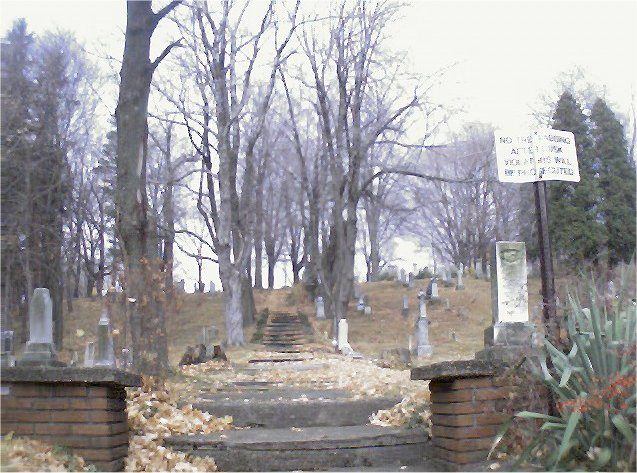
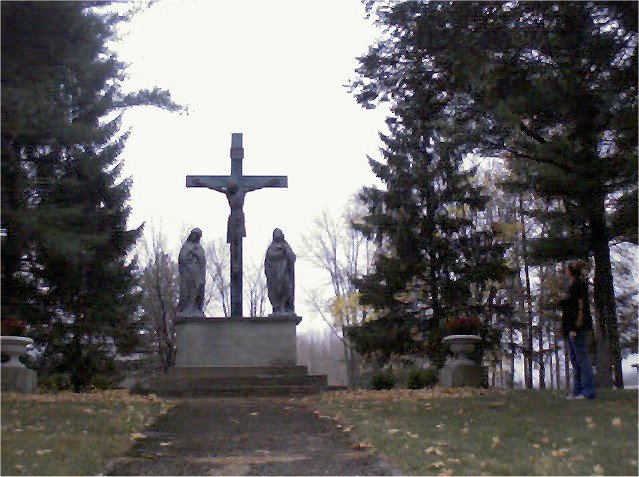

Stairway to Heaven

A cemetery near Suffield in Portage County has a long staircase which is known as "The Stairway to Heaven." Supposedly, if you walk up this staircase at night, a large statue of Jesus along the way will glow.

Back